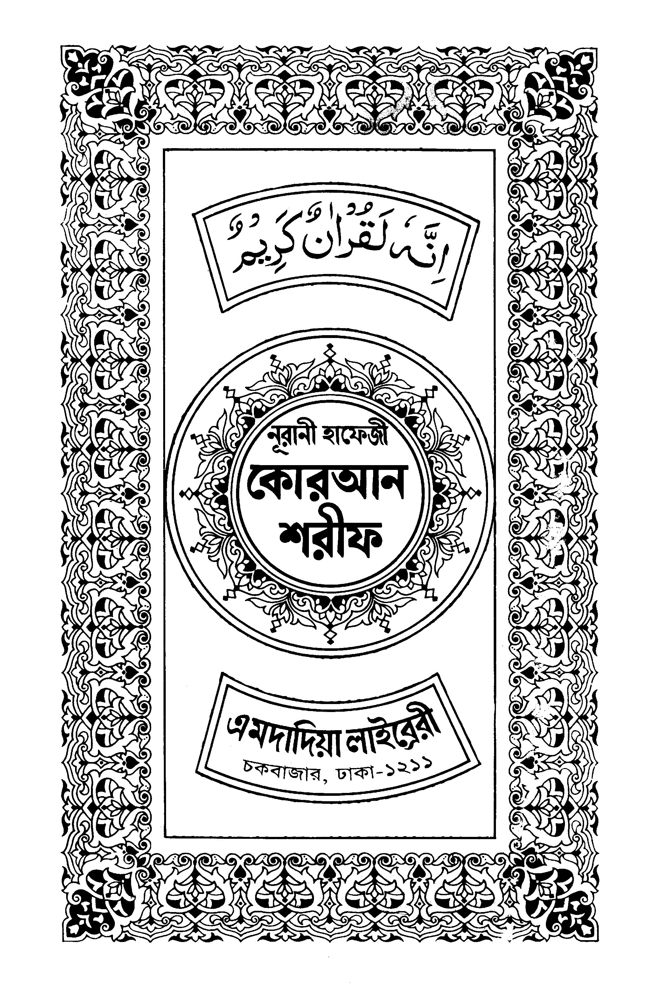

সূচীপত্র
১. আল-ফাতিহা
الفاتحة
পারা ১
•
পৃষ্ঠা ১
🌙
📲
আইফোন ব্যবহারকারী:
Safari-তে Share বাটনে চাপ দিয়ে
Add to Home Screen
বেছে নিন।
✕
পাতা লোড হচ্ছে...

কুরআন সূচীপত্র
✕
সর্বশেষ পঠিত পাতা
সূরা ১: আল-ফাতিহা
পৃষ্ঠা ১ এ ছিলেন
চালিয়ে যান →
সূরা তালিকা (১১৪)
পারা তালিকা (৩০)
বুকমার্কসমূহ
বাংলা অনুবাদ
সূরা আল-ফাতিহা
✕
পৃষ্ঠার অনুবাদ
তাফসীর
শব্দার্থ
চালু
তাফসীর গ্রন্থ:
আহসানুল বায়ান
ইবনে কাসীর
অনুবাদ লোড হচ্ছে...
পৃষ্ঠা নম্বরে যান
১ থেকে ৬১২ এর মধ্যে যেকোনো নম্বর লিখুন:
বাতিল
পৃষ্ঠায় যান